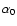
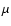
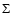
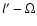
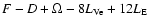
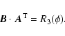
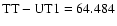
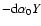
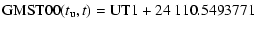

A&A 406, 1135-1149 (2003)
DOI: 10.1051/0004-6361:20030817
N. Capitaine1 - P. T. Wallace2 - D. D. McCarthy 3
1 - Observatoire de Paris, SYRTE/UMR8630-CNRS, 61, avenue de
l'Observatoire, 75014 Paris, France
2 - HM Nautical Almanac Office, Space Science and Technology Department,
CLRC / Rutherford Appleton Laboratory, UK
3 - US Naval Observatory, 3450 Massachussetts Avenue NW,
Washington DC, 20392-5420, USA
Received 16 January 2003 / Accepted 28 May 2003
Abstract
This paper provides expressions to be used to implement the new
definition of UT1 corresponding to the IAU 2000 resolutions either in
the new (CEO-based) or classical (equinox-based) transformations between
the International Terrestrial Reference System (ITRS) and the Geocentric
Celestial Reference System (GCRS). The new expression for Greenwich Sidereal
Time (GST) has to be in agreement at the microarcsecond level, for one century,
with the IAU 2000 expressions for the Earth Rotation Angle (ERA) and for the
quantity s positioning the Celestial Ephemeris Origin (CEO) on the equator
of the CIP. The computations of the new expressions using the IAU 2000
precession-nutation model are performed in such a manner
as to ensure that
there is no discontinuity in UT1 on 1 January 2003 and that there is equivalence
of the classical and new transformations between the ITRS and GCRS relative to the
rotation about the axis of the CIP when these expressions are used.
The equinox offset that is considered in the computations refers to the
dynamical mean equinox of J2000.0.
The resulting expressions have been included in the IERS Conventions 2000.
Key words: astrometry - reference systems - ephemerides - time
Prior to the IAU 2000 definition, UT1 was formally defined by an expression which relates it to mean sidereal time. This expression, which previously was based on Newcomb's expression for the right ascension of the "fictitious mean Sun'', was modified for use with the 1976 System of Astronomical Constants, starting on 1984 January 1, 0h UT1. The expression for Greenwich Mean Sidereal Time (GMST) at 0h UT1, which was assumed to be the "defining relation'' providing the conventional definition of UT1 (Aoki et al. 1982), was developed in order to provide continuity in the value and rate of UT1 as determined from observations at the epoch of change. In realizing this condition, only the effects of changes in position of the catalog equinox from the FK4 to the FK5 and in the precession quantities were considered and the expression was developed to represent a fiducial point with uniform sidereal motion in the new system. The fixed and secular terms in the conventional relationship were fitted to ensure the above conditions, resulting in a change in the "rotational period'' of the Earth in UT1, which was considered as a derived quantity.
IAU Resolution B1.8 defines UT1 as linearly proportional to the Earth Rotation Angle (ERA) between the CEO and the TEO, origins on the moving equator which are based on the concept of the "non-rotating origin'' (Guinot 1979), in the celestial and terrestrial reference systems respectively. The conventional relationship between ERA and UT1, which has to be considered as being the new defining relation of UT1, does not require modification in order to maintain continuity in UT1 when the models for the motion of the CIP in the GCRS or ITRS are improved or the celestial reference system changed. Therefore, in contrast to the previous approach when the IAU 1976 System was adopted, the implementation of the new definition of UT1 does not require revision of the relationship defining UT1 itself, but is based on computation of expressions to be used in the transformation between ITRS and GCRS, once the relationship ERA(UT1) is adopted. This is an important change as compared with the previous procedure. A second change is that this new definition has to be implemented consistently in the new transformation referred to the CEO and in the classical transformation referred to the equinox, which makes it necessary to develop separate expressions for the two options, in each case compliant with the IAU 2000 precession-nutation.
A third change is that, whereas the previous definitions of UT1 were associated with the use of a star catalog and stellar observations, from which UT1 was indirectly derived, the new definition is associated with the use of modern techniques to determine Earth orientation parameters and with the International Celestial Reference System (ICRS) realized by extragalactic radio sources. The new expression for sidereal time, which must now be regarded as a derived expression, has to take into account the equinox offset between the mean equinox at J2000.0 and the x-Âorigin of the ICRS.
UT1 has been determined observationally essentially from VLBI observations. During the evolution of the VLBI analysis process, it became apparent that there were non-negligible errors in the models for the position of the celestial pole in the celestial reference system. To compensate for these errors, the VLBI analyses were performed solving for "celestial pole offsets''. These have been reported by the International Earth Rotation Service (IERS) and were used to establish the MHB2000 nutation model (Mathews et al. 2002), which was adopted as the IAU 2000A model.
The estimates of UT1 determined in this way implicitly include the offset in longitude and the correction to the 1976 precession in longitude in the equation of the equinoxes. Also, recall that in 1997 the expression for Greenwich Sidereal Time (GST) was amended with the addition of two complementary terms to make the definition consistent with observational accuracy. As a result, the observational values of UT1 reported by the IERS do not strictly refer to the conventional IAU definition of UT1 (Aoki et al. 1982). In fact, since the IAU 2000A model closely approximates the observed celestial pole offsets, the values of UT1 reported until this time have been consistent with the IAU 2000A precession-nutation. Implementation of the IAU resolutions on 1 January 2003 requires that a new definition of UT1 be determined that is in agreement with past observational practices as well as the IAU resolutions.
The purpose of this paper is to provide expressions to implement the new definition of UT1 based on these IAU 2000 resolutions, either in the new (CEO-based) or classical (equinox-based) transformations between the ITRS and GCRS. The new expression for Greenwich Sidereal Time, GST, has to be in agreement at the microarcsecond level, for one century, with the conventional relationship between the Earth Rotation Angle (ERA) and UT1 and with the IAU 2000 expressions for the quantity s positioning the CEO on the equator of the CIP. The computations of the new expressions using the IAU 2000 precession-nutation model (Mathews et al. 2002) are performed in such a manner as to ensure that there is no discontinuity in UT1 on 1 January 2003 and that there is equivalence of the classical and new transformations between the ITRS and GCRS relative to the rotation about the axis of the CIP when these expressions are used. This requires us to determine the corresponding conventional values to be adopted in these expressions for the parameters which are sensitive to the models and have a critical role in ensuring continuity.
The paper first summarizes in Sect. 2 the necessary considerations for the computations and gives in Sects. 3 and 4 the details of the computation of the expressions for s and GST. Then, Sect. 5 presents the tests for equivalence between the two transformations, Sect. 6 reports on the comparison between the current and new procedures and Sect. 7 provides the numerical expressions which fulfill the above requirements. The expression for GST is provided as the sum of the two following expressions:
and the definitive expression (46) for the polynomial part of the quantity s locates the CEO in a consistent way with the above expressions. Additionally, an electronic table, available at http://maia.usno.navy.mil/ch5tables.html, provides the full numerical expression for GST00, including its polynomial part (41) for GMST and the definitive and full form of the complementary terms to be added to the classical equation of the equinoxes in (44). Finally, Sect. 8 provides the practical way to implement the new definition of UT1 according to the procedure used and Sect. 9 summarizes the main points of the paper.
The Earth Rotation Angle (ERA), ,
is obtained by the use of its
conventional relationship with UT1 as given by Capitaine
et al. (2000),
| (2) |
| (3) |
As mentioned in the Introduction, there are two equivalent ways of implementing Resolution B1.8 in the transformation from ITRS to GCRS, namely (a) the new paradigm based on the direct use of the CEO and the ERA and (b) the classical paradigm based on the equinox and GST, but using the CEO and the ERA indirectly. They are called respectively "CEO-based'' and "equinox-based'' transformations in the following.
Although neither the ITRS nor the GCRS involves the equinox or the CEO directly, the classical and new transformations do use these distinct longitude zero-points during the course of the transformation. This raises questions of nomenclature, in particular what to call the equivalent in the new system of the classical right ascension. It can be argued that because historically right ascensions have always been with respect to an equinox it is improper to use the same term for the CEO-based case. By analogy with the well-established use of the terms right ascension and declination in specifying ICRS coordinates, we take the pragmatic view that the introduction of the CEO as an alternative zero-point does not justify a change in terminology. Thus we use the term right ascension in a generic way, meaning the longitude coordinate of any Earth-pole-based celestial coordinate system; it, may be referred to the CEO (or the ICRS prime meridian) as well as some sort of equinox.
In our convention, the CEO is thus the origin of right ascension of date in the new system, the counterpart of true equinox of date in the classical system. The two origins of course have quite different properties. The equinox is defined geometrically and has a complex and comparatively rapid motion along the instantaneous equator that is is a consequence of the motion not only of the moving equator but of the moving ecliptic as well. The CEO, which is an implementation of the non-rotating origin (Guinot 1979), in contrast is defined kinematically: from one moment to the next, it moves only at right-angles to the instantaneous equator, and no ecliptic is involved.
This almost complete separation between the treatment of the precessing-nutating pole and the origin of right ascension leads to a much simpler relationship between stellar hour angles and Universal Time. Note also that the CEO is at present almost stationary in ICRS right ascension, remaining within 0.1 arcsec of the ICRS prime meridian for the whole of the 21st century and beyond.
The CEO-based transformation uses the conventional relationship
between the ERA and UT1 together with the quantity s(t)
providing the position of the CEO,
 ,
on the equator of the CIP. This
quantity is defined kinematically, and depends on an
integration that uses the history of the CIP coordinates (X,Y),
as given by the IAU 2000A precession-nutation model.
The quantity s corresponding to a finite displacement of the
CIP between epochs t0 and t is such that:
,
on the equator of the CIP. This
quantity is defined kinematically, and depends on an
integration that uses the history of the CIP coordinates (X,Y),
as given by the IAU 2000A precession-nutation model.
The quantity s corresponding to a finite displacement of the
CIP between epochs t0 and t is such that:
The equinox-based transformation uses a conventional relationship between GMST and UT1 together with an expression for the "equation of the equinoxes'' providing the difference between Greenwich (apparent) Sidereal Time, GST, and GMST. The kinematical definition of GST refers to the kinematical meaning of the equation of the equinoxes (see Sect. 4.4), which refers the Earth rotation to the CEO. This is defined as the sum of two parts, the classical part and the complementary terms. For further details see Aoki & Kinoshita (1983) and Capitaine & Gontier (1993). It will be called in the following the "complete equation of the equinoxes''. These expressions have to be derived in conjunction with precession and nutation quantities derived from the IAU 2000A precession-nutation model.
This equinox-based transformation has to take into account the frame
bias about the z-axis, d,
which is the right ascension of the mean
equinox at epoch, ,
in the GCRS. This component of the frame bias
is the arc such that
,
where
is the
x-origin of the GCRS,
is the mean equinox of J2000, and N0
is the node between the mean equator at J2000 and the equator of the GCRS.
Note that this
 rotation does not cause shifts in the right
ascensions of stars in either the GCRS or the intermediate frame. It merely
re-orients the underlying classical precession-nutation model, eliminating a small
but spurious distortion that would otherwise be present.
The corresponding shifts in the "true'' right ascensions are canceled
by compensating changes to the new sidereal time formulas. The numerical value,
rotation does not cause shifts in the right
ascensions of stars in either the GCRS or the intermediate frame. It merely
re-orients the underlying classical precession-nutation model, eliminating a small
but spurious distortion that would otherwise be present.
The corresponding shifts in the "true'' right ascensions are canceled
by compensating changes to the new sidereal time formulas. The numerical value,
 mas, used for this equinox offset is that provided
by Chapront et al. (2002) which corresponds to the inertial
definition of the equinox. See Appendix A and
Capitaine et al. (2003) for further discussion.
mas, used for this equinox offset is that provided
by Chapront et al. (2002) which corresponds to the inertial
definition of the equinox. See Appendix A and
Capitaine et al. (2003) for further discussion.
The numerical development used for positioning the CEO on the equator of the CIP is for s+XY/2 rather than s itself, because the former requires fewer terms to reach a given accuracy (Capitaine 1990). There is, moreover, a helpful similarity between the quantity s+XY/2, which equals, up to the 3rd order in X and Y, the GCRS right ascension of the CEO, and the complementary terms in the complete equation of the equinoxes, which represent the right ascension of the CEO in the mean equatorial frame at J2000. In the expression for s+XY/2(cf. Eq. (7)), the amplitudes of the trigonometric terms are due to cross terms between precession and nutation and between the biases and the nutations. The coefficients of the polynomial part, except the secular term, originate from cross terms between the coefficients of the polynomial parts of X and Y. The secular term contains both the cross term between the bias in Y and the precession rate in X and the effect of the nutations. For more detail, see Sect. 4.4.
Given the above considerations, the following conditions have to be fulfilled to ensure consistency between the z-rotation component of the CEO-based and equinox-based transformation between GCRS and ITRS:
We also note the following:
(1) The conventional relationship (1) between
and
UT1 is related to the current relationship between GMST and UT1
so that, if
and
are the fixed and secular
terms respectively (see Capitaine et al. 1986):
(2) A consequence of measures taken in the past to keep UT1 continuous whenever improvements in the GST(UT1) relation were introduced is that GMST and the equation of the equinoxes no longer mean, geometrically, "the GHA of the mean equinox'' and "the true RA of the mean equinox'', thus compromising any strictly classical interpretation. The changes on 1 January 2003 carry this process one stage further.
(3) The two largest terms that have already been introduced in the "equation of the equinoxes'' (cf. IAU Resolution C7, Recom. 3, 1994), on 1 Jan. 1997 when they were close to zero, were really to make ERA(UT1) correspond better to the Earth rotation angle with respect to an inertial reference system, and were not in principle changes either to GMST or the equation of the equinoxes in a geometrical sense; the equation of the equinoxes currently in use, will be called in the following "the IAU 1994 equation of the equinoxes'', EE1994.
(4) The value of the complementary terms introduced into the equation of the equinoxes on 1 Jan. 1997 was not exactly equal to zero at that date, but to as, and its value at J2000.0 was as (see Table 2).
(5) We must expect the provisional convention s(0)=0 to be at odds with other constraints, in particular d and .
(6) A consequence of the current VLBI estimations of UT1 which do not take into account any equinox offset is that, in practice, GMST(J2000) actually refers to the GCRS origin of right ascension and not to the mean equinox of epoch, as it is generally understood.
(7) The current VLBI estimations of UT1 make use of the "celestial pole offsets'' to correct the equation of the equinoxes (see Sect. 6), which has the consequence of deriving UT1 from a "practical'' relationship between GMST and UT1 which differs from the conventional relationship by correcting the discrepancies in the precession-nutation model in ecliptic longitude.
(8) The values of the constant and secular terms both in s and GST are the critical conventional values to be chosen to ensure that there is (i) equivalence between the CEO and equinox-based transformations for the estimation of UT1 and UT1 rate and (ii) that there is no jump in UT1 and the least possible discontinuity in dUT1/dt on 1 Jan. 2003.
The above statements have to be taken into account when determining the constant value at J2000.0 of both s and GST, as well as the secular term in their expressions. The adoption of numerical values for these terms is the final step in providing the conventional expressions for these quantities (see Sect. 7.2).
The above formulation allows one to predict s directly as a function of time. Note that applications requiring s could, in principle, perform a numerical integration to evaluate expression (6). However, such approaches would usually be too computationally expensive to be practical, hence the need for an expression as a function of time.
A semi-analytical expression including a polynomial of t and a trigonometric
part depending on the literal fundamental arguments of nutation
was computed with the GREGOIRE software package, designed to manipulate
Poisson series. The computation used IAU-2000A-based expressions for the
coordinates X and Y as functions of time, relations (20) and (21) in
Capitaine et al. (2000) and produced an expression for s including all the
terms larger than 0.1 as (Capitaine et al. 2003) in the form:
A limitation of the semi-analytical computation is due to the introduction, through the integration process, of very small divisors associated with critical combination of arguments which produce a "numerical noise'' without any physical meaning, not acceptable to achieve a given precision. The computation was therefore limited to periods lower than 500 years and the contribution to s from nutation terms with periods greater than 500 years has been considered as a contribution to the secular and quadratic terms for which the notation will be used. This contribution has been evaluated by the use of a rigorous numerical integration as described below.
| (8) |
We used this direct numerical integration procedure to compute s over an interval from 1800 to 2200, with time steps typically of 0.1 day but as small as 0.005 day in some trials. These predictions were compared with the s expression (provisional model) by taking differences every 200 days and fitting a polynomial in t. The results are shown in Table 1. Prior to fitting, the residuals stay within a few microarcseconds from 1900 to 2100. The contribution has been evaluated (in as) to be .
The small change to the fixed term is meaningless, because the integration was initialized in agreement with the model, and the other adjustments are not significant. The final fitted value for the constant term will be provided in Sect. 7.2.
This numerical integration, which has confirmed the semi-analytical expression for s as a function of time at the level of a few microarcseconds after one century, has provided the definitive expression for the secular and quadratic terms in the expression.
| Provisional model | Fitted value | Degree |
2184 |
2184.7 | constant |
| +3812 | +3808.35 | t |
| -121.15 | -119.94 | t2 |
| -72574.09 | -72574.09 | t3 |
| +27.70 | +27.69 | t4 |
| +15.61 | +15.65 | t5 |
The expression for the quantity s provides the position of the CEO on the equator of the CIP, given the arbitrary constant, C0 which is related to , the position of the CEO at J2000 on the equator of the CIP at J2000 (see relation (5)). This position has to be chosen in order to ensure consistency between the CEO-based and the equinox-based transformations, taking into account the frame bias about the z-axis, d.
In the CEO-based transformation for this simplified case, the GCRS would be
transformed to the intermediate frame of date linked to the CIP and CEO,
using the quantities E and d which include both the effect of the
z-bias and the precession. This would transform to a frame linked to
the CIP and to an origin 
on the equator of the CIP, such
that
would equal
 .
Then s would be used to
define the CEO kinematically.
.
Then s would be used to
define the CEO kinematically.
The arbitrary constant C0 related to the position of the CEO at
J2000, could therefore be chosen such that
would equal
 ,
which means that
is chosen in order that the rotation
to the equinox at epoch annuls d.
,
which means that
is chosen in order that the rotation
to the equinox at epoch annuls d.
| Epoch | s+XY/2 | EEc1994 | EEc2000 |
| 01/01/1997 | + 124 | - 134.0 | - 123.5 |
| 2000.0 | - 2107 | + 2102.1 | + 2107.2 |
| 01/01/2003 | + 2476 | - 2476.0 | - 2476.4 |
The constant terms in the formulas for s and s+XY/2 have in
the past been chosen in order that
would equal 0,
which means
that:
| (9) |
Consistent values for (i) the secular term in s and (ii) the secular nutation contribution in GMST should be adopted in order that the continuity of UT1 rate be ensured in the best possible way when changing from the current expression of GST to either the new expression for GST or the expression for s, being a conventional relationship.
Concerning the secular term in the expression for s, it has been noted
(see Sect. 2) that the IAU 2000 relationship (1)
has been derived from the 1982 conventional expression for GMST(UT1) in order
that the secular contribution of the current conventional model for nutation
be included in GMST. Note that this contribution represents the secular term
in the corresponding expression for s. The numerical value used in this
computation was as/c, the value consistent with the IAU 1980 nutation
and no offsets of the CIP at J2000. The updated value for the secular term,
,
in
s, consistent with the IAU 2000 precession-nutation and its associated offsets at J2000,
is given by:
| (10) |
Continuity in UT1 rate, between the current GMST(UT1) relationship and the new one based on the CEO, would require that the secular contribution from nutation in the expressions for s corresponding to the old and new model be the same, whereas there is an unavoidable difference of as/c due to the improvements in the model.
Moreover, it should be noted that the definition of the Earth Rotation Angle requires the use of a quantity s' for positioning the TEO in the ITRS, which is at present modeled as as t (see Lambert & Bizouard 2002). This secular amount adds to that of - s in the new expression.
This shows that continuity in UT1 rate cannot be strictly ensured when using expressions consistent with the IAU 2000A precession-nutation model.
The computation of this expression is based on the following relation to the
Earth Rotation Angle, retaining all the terms needed to achieve a final accuracy
of one microarcsecond:
The second and third lines in (11) account for the accumulated precession
and nutation in right ascension from J2000 to the epoch t.
The difference
 provides the right ascension of the CEO measured
from the equinox along the moving equator and
is a constant term
to be fitted in order to ensure continuity in UT1 at the date of change (1 January
2003).
provides the right ascension of the CEO measured
from the equinox along the moving equator and
is a constant term
to be fitted in order to ensure continuity in UT1 at the date of change (1 January
2003).
The computation has been performed in a semi-analytical form
using the same software for products, derivatives and integration
of polynomials and trigonometric series as that used for the
computation of the quantity s. The resulting development is a polynomial
in t, which, by convention, will be considered as being GMST, plus
the classical "equation of the equinoxes'',
,
plus a series of periodic terms similar to those
appearing in the quantity s + XY/2 (with nearly the same amplitudes and
with opposite sign). The following expression is consistent with those
for
and s:
The IAU 2000A expression for the complementary terms of the equation of the equinoxes, is provided by Table 3 and is also included in the electronic table providing the full numerical expression for GST, available at http://maia.usno.navy.mil/ch5tables.html
| Argument | (C's,0)k | (C'c,0)k |
|
+2640.96 | -0.39 |
| +63.52 | -0.02 | |
| +11.75 | +0.01 | |
| +11.21 | +0.01 | |
| -4.55 | +0.00 | |
| +2.02 | 0.00 | |
| +1.98 | 0.00 | |
| -1.72 | 0.00 | |
| -1.41 | -0.01 | |
|  | -1.26 | -0.01 |
| -0.63 | 0.00 | |
| -0.63 | 0.00 | |
| 0.46 | 0.00 | |
| 0.45 | 0.00 | |
| 0.36 | 0.00 | |
|  | -0.24 | -0.12 |
| 2F | 0.32 | 0.00 |
| 0.28 | 0.00 | |
| 0.27 | 0.00 | |
| 0.26 | 0.00 | |
| -0.21 | 0.00 | |
|
|
0.19 | 0.00 |
| 0.18 | 0.00 | |
| -0.10 | 0.05 | |
| 2D | 0.15 | 0.00 |
| -0.14 | 0.00 | |
| 0.14 | 0.00 | |
| -0.14 | 0.00 | |
| 0.14 | 0.00 | |
|
|
0.13 | 0.00 |
| -0.11 | 0.00 | |
| 0.11 | 0.00 | |
| 0.11 | 0.00 | |
|
0.00 |
The IAU 2000 expression for GMST can also be expressed as the sum of the current expression for and the difference d between the polynomial part of the IAU 2000 expression for GST and the current GMST expression. The new expression for GST can then be provided by the sum of the new expression for dGMST plus the new expression for the equation of the equinoxes.
This method is equivalent to the previous one except for the time scale on which the computation of the accumulated precession in right ascension (i.e. UT in the 1982 GMST relationship and TT in the new GST) is based. More detail on the effect of the time scales on the GST expression is given in Sect. 4.3.
The numerical expression for dGMST has thus been derived from the polynomial
part of the expression (12) for GST, minus the difference between
and
.
In as, it is:
The new expression for GST as a function of time clearly distinguishes between , which is expressed as a function of UT1, and the accumulated precession-nutation in right ascension. This part, being derived from the precession-nutation quantities, which are expressed in TDB (or, in practice, TT), is consequently expressed in TT.
This is not the case in the
expression which used only UT1 and, therefore, mixes the two time
scales UT1 and TT (see Capitaine et al. 1986).
This inconsistency had no significant consequence at the time (1982) when the
GMST(UT1) relationship was adopted. However, at the start of 2003,
s, which, when multiplied by the speed of
precession in right ascension, gives differences of about as in
the GST prediction and therefore in the estimated
UT1 (see Gontier 2002). More precisely, using
s, the effect
can be expressed as:
| (14) |
This is an example of the benefits of the clear separation between ERA and precession-nutation in the new CEO-based transformation. It also shows that the estimation of UT1 based on the current relationship GMST(UT1), includes a systematic error of the order as due to the incorrect use of UT for computing precession in RA in GST. This effect has also to be considered when ensuring continuity of UT1 on 1 Jan. 2003.
| (15) |
The contribution to GST from precession is:
| (16) |
| (17) |
The contribution to GST from nutation and coupling between precession and nutation
can be written as:
| (18) |
| (19) |
At the microarcsecond level, we can write (see Aoki & Kinoshita 1983
and Capitaine & Gontier 1993):
| = | |||
| (20) |
The relation between the quantity s and the complete equation of the equinoxes can be derived by equating the rotation along the equator of the CIP from the node N (see Sect. 2) to the TEO in the two transformations.
This provides, at the microarcsecond level:
In the provisional model for the complementary terms in the equation of the equinoxes, the constant term has been chosen so that it compensates the value of its periodic component at J2000. Its numerical value, which is mainly due to its two first terms, is provided by Table 2 at different dates of importance for the IERS Conventions.
Note that the two first periodic terms of have already been included in the expression of GST since 1 Jan. 1997 as complementary terms to the classical equation of the equinoxes (see Sect. 2). Note also that the constant term of the final z-rotation in the equinox-based transformation is the value at epoch (see expression (25)) of the quantity d
The constant contribution of these terms is now considered as being part of GMST.
The secular term in GST contains one term, originating from the computation of the "complete equation of the equinoxes'', which is a contribution from nutation, similar to that appearing in s (see 3.4). We elect to include this secular component in the formula for GMST. Note that the secular term of the final z-rotation from the node in the equinox-based transformation (see expression (23)) includes the contributions both from nutation (d ) and frame bias ( ). Concerning the requirement for ensuring continuity in UT1 rate, see Sect. 3.4.
We have compared the new (CEO-based) and classical (equinox-based) transformations from GCRS to ITRS, with polar motion omitted. The comparisons were made through the GCRS-to-ITRS rotation matrix, which we call , with elements .
The new form of the transformation is written, using our usual notation, as:
For this comparison the quantity s(t) is that derived from expression (6) using the CIP coordinates (X,Y), corresponding to the IAU 2000A precession-nutation model, as provided by Capitaine et al. (2003), with the final polynomial part as computed in Sect. 3, with the working assumption that s equals zero at epoch (J2000), (i.e. the constant term in s being equal to as).
The classical form of the transformation is written as
| (29) |
For this comparison, the constant term in the expression for GMST is as, chosen to make the contribution of the complementary terms in the equation of the equinoxes equal zero at epoch (J2000) (see Sect. 4.5).
Note that the precession matrix, , can be formed in several ways (Williams 1994), depending on which of the Lieske et al. (1977) angles is used. The four-angle formulation given above has the advantage that the IAU 2000A precession-rate adjustments can be applied directly and unambiguously. The three-angle formulation using , and is more common, but in this case applying the IAU 2000A precession-rate adjustments is not as straightforward. Note also that , and polynomials are not suitable for combining frame bias and precession in one step, because of difficulties close to epoch. Other three-angle polynomial formulations are possible that overcome this difficulty.
For both the classical and new transformations, elements (3,1) and (3,2) of the matrix are the coordinates X,Y of the CIP in the GCRS. Accordingly, our comparisons of the classical and new CIP predictions consisted simply of comparing X and Y obtained directly (see Capitaine et al. 2000) with elements (3,1) and (3,2) of .
When we carried out the classical transformations for , and as above, namely as three separate, rigorous, steps (for more detail see Wallace 2002), we achieved an agreement of a few as between the classical and new methods. However, if we omitted the bias, used the Lieske et al. (1977) precession model without adjustments, and then used the IAU 2000A "total'' nutations (i.e. the nutations themselves plus the contribution of the corrections to the precession rates plus the biases), errors reaching 1 mas after a century were seen. Furthermore, differences of a similar size were seen if different choices of precession angles were made, because of limitations set by the Lieske et al. (1977) series. More details concerning these tests are given in Capitaine et al. (2003).
| (31) |
| (32) |
|  | (33) |
| (34) |
| (35) |
The comparison has been performed over several centuries around J2000. The z-rotation differences obtained in this comparison are very similar for (I) versus (II) and (I) versus (III).
We note that, in order that the z-rotations be equivalent in the CEO-based and equinox-based transformation, the constant term to be used in s is minus the value at epoch of the quantity s+XY/2 (see Table 2), instead of that of s (see Table 1). Once the constant term is removed, the agreement is of the order of a few as over the four centuries between the two transformations (see Fig. 1 for the plot of the corresponding UT difference).
| Figure 1: z-rotation difference, expressed as UT difference, between the equinox-based and CEO-based transformations over 2 centuries around J2000. |
The current estimation of UT1 from observations makes use of the "IERS (VLBI)
celestial pole offsets'' to correct the equation of the equinoxes in using
the term d
 ,
where d
is the celestial offset in
ecliptic longitude, including the correction to the IAU 1976 precession model,
the IAU 1980 nutation model and the frame bias d
at J2000.
Such a method actually derives UT1 from a value of GST which corresponds to:
,
where d
is the celestial offset in
ecliptic longitude, including the correction to the IAU 1976 precession model,
the IAU 1980 nutation model and the frame bias d
at J2000.
Such a method actually derives UT1 from a value of GST which corresponds to:
Note that the current VLBI procedure does not use the rigorous transformation as described in the previous section, but uses a procedure which considers the precession and frame biases corrections as if they were nutations. This introduces spurious secular and quadratic terms in the estimated UT1 and also cancels the contribution ( ) from the frame bias in longitude (cf. point (v) above) to GMST.
Figure 2 shows UT differences between the current VLBI procedure and the rigorous (or CEO-based) method with the final fitted values for the constant terms (see the following section). Figure 3 shows the same differences but with the complementary contribution of a modeled variation of . These Figures show that, in the long term, the differences are dominated by a quadratic term; this comes from the correction to the precession rate in obliquity which was not corrected in the current VLBI procedure, whereas the main secular difference is due to the variation in . The periodic differences originate from the new terms considered in the expression of the complementary terms in the equation of the equinoxes.
| Figure 2: UT differences between the current VLBI reduction (with fixed ) and CEO-based over 2 centuries around J2000. |
![\begin{figure}
\par\includegraphics[angle=270,width=8.8cm,clip]{3487f3.ps}\end{figure}](https://www.aanda.org/articles/aa/full/2003/30/aa3487/img190.gif) |
Figure 3: UT differences between the current VLBI reduction and CEO-based over 2 centuries around J2000, with an approximate model for . |
The above considerations together with those already noted in Sect. 2 are important points to take into account for ensuring continuity in UT1 on 1 Jan. 2003. In order to be consistent with the current reduction of observations, the correct procedure would be not to ensure continuity with the current expression for GMST(UT1) based on the IAU 1976 precession and the IAU 1994 equation of the equinoxes. It would rather be to ensure continuity with an expression for GST which is already corrected for a part of the imperfection in the current precession-nutation model, using the correction to the equation of the equinoxes based on the estimated celestial pole offset.
Moreover, it is also necessary to take into account that the future estimations
of UT1 will continue to use the correction d
 to the equation
of the equinoxes derived from the observed celestial pole offsets d,
which
will be corrections to the IAU 2000A precession-nutation model.
to the equation
of the equinoxes derived from the observed celestial pole offsets d,
which
will be corrections to the IAU 2000A precession-nutation model.
The continuity in UT1 which has to be ensured on 2003 Jan. 1.0 TT (i.e. JD 2 452 640.5 TT) requires that, at that date, the rotation about the axis of the CIP is the same when using the current VLBI procedure to estimate UT1 and the new procedure based on the expressions developed in the previous sections to implement the IAU 2000 definition of UT1.
As already mentioned, continuity in UT1 rate cannot be strictly ensured between the old and new procedures, due to the use of both a conventional ERA(UT1) relationship and new models of which aim is to provide an ERA derivative which represents more accurately the Earth's angular velocity.
The discontinuity in UT1 rate will be due to (i) improvement in the computation of the secular contribution of nutation (see Sects. 3.4 and 4.6), (ii) the use of the new quantity s' for positioning the TEO, (iii) the introduction of additional terms in the expression for the dynamical equation of the equinoxes (and equivalently for s), (iv) the distinction between TT and UT1 in the new model for GST, (v) the improvement in the precession rate in obliquity.
Figure 4 shows the UT differences over 40 years around J2000 between the current estimation and the new estimation based on the new models. This shows that the differences at present are dominated by the incompleteness of the IAU 1994 expression for the equation of the equinoxes.
| Figure 4: UT differences between the current VLBI reduction and CEO-based, with fixed over 40 years around J2000. |
The two constraints at play in order (a) to ensure the equivalence between the CEO-based and equinox-based transformations for providing UT1 and (b) to ensure the continuity of UT1 when changing from the old to the new models for precession, nutation and GST are
Note that this is a generalization of the condition which was used in Aoki et al. (1982), but restricted at that time to precession and equinox bias.
In order that constraint (b) be verified, the relation to be used is
| (36) |
The expression for
is such that, at 2003 Jan. 1.0 TT,
| (37) |
| (38) |
EE1994 being (see Sect. 2 (3)), the
IAU 1994 equation of the equinoxes:
| (39) |
The models for computing the quantities in the old system are thus based on:
The objective is to derive values for the terms in GMST and s+XY/2 so that the various methods of computing the rotational orientation of the Earth - old GST/equinox, new GST/equinox, and ERA/CEO - all agree at 2003 Jan. 1.0 . In order to achieve this agreement we need to predict for that date, and a value of 32.3 s was adopted, corresponding to  s. Given the TT (TDB) and UT1 dates, and neglecting both polar motion and the free core nutation, we are in a position to calculate the constant term in GMST. Given that term, the CEO can be located by making a suitable choice of fixed term in the s+XY/2 expression. The procedure used was as follows:
The fixed term of as in s+XY/2 corresponds to a value
of as for the GCRS right ascension of the CEO at epoch
(i.e.  as for the constant C0).
We note that the fixed term in GMST compensates both the change in the
mean equinox at epoch used as reference for the old and new expressions for GST
and the effect in GST of the difference between TT and UT1 at the date of change.
as for the constant C0).
We note that the fixed term in GMST compensates both the change in the
mean equinox at epoch used as reference for the old and new expressions for GST
and the effect in GST of the difference between TT and UT1 at the date of change.
The expression for Greenwich Sidereal Time consistent with the IAU 2000A
precession-nutation model can be written in the form:
The change in the polynomial part of GST from the IAU 1982 model to the
IAU 2000A model is, in as and with
in seconds:
The above expression corresponds to the following change in the equation
of the equinoxes, from the IAU 1994 model to the IAU 2000A model, in as:
There are several ways to implement the IAU 2000 system, and the numerical expressions to be used should be consistent with the procedure required. Using the new paradigm, the complete IAU 2000 procedure to transform from the GCRS to the ITRS is based on (i) the expression (1) for the ERA, (ii) the IAU 2000 expressions for the position (X, Y) of the CIP in the GCRS (Capitaine et al. 2003), and (iii) the expressions for the position of the CEO in the GCRS, developed in the paper quoted above and based on the constant and secular terms of its polynomial part, fitted in this paper for ensuring consistency in UT1.
Using the classical paradigm, the recommended option for implementing the new models is to follow the rigorous procedure (Wallace 2002) described by expression (30), composed of the classical nutation matrix using the MHB 2000 series, the precession matrix including four rotations (for ), using the updated developments for these quantities and a separate rotation matrix for the frame bias. This procedure has to be associated with the use of expressions (41) for GMST and (44) for the equation of the equinoxes, involving the complete form for the expression of the complementary terms.
In the case where one follows the current VLBI procedure and forms the precession-nutation matrix by applying the "total nutations'' to the IAU 1976 precession, there are three differences with respect to the previous option which affect the form of GST expression to be used. The first difference is the effect on the matrix of applying all four nutation components - not only the luni-solar and planetary components but also the biases in longitude and obliquity and the correction to the 1976 precession rates in longitude and obliquity - at date, when the last two should in fact be applied at epoch. The second is the use of this "total'' in the classical part of the equation of the equinoxes. The third is that the equinox offset is not taken into account in the precession-nutation matrix.
In this case, the new expression, GMST00
to be used for GMST,
together with the EE00 expression for the equation of the equinoxes, has
to be derived from expression (41). This is obtained by
subtracting (i) the contribution of the equinox offset, (ii) the
contribution of the correction to the precession rate in longitude, which
is already taken into account in the GMST00 expression and (iii) the cross
term between precession and the offset in obliquity. The resulting
expression, in as, is:
In this paper we have provided expressions to be used to implement the IAU 2000 definition of UT1, using the IAU 2000 precession-nutation model, either in the new (CEO-based) or classical (equinox-based) transformations between the ITRS and GCRS. The computations have been performed so that there is equivalence of the classical and new transformations relative to the rotation about the axis of the CIP when these expressions are used. The new expression provided for GST is in agreement at the microarcsecond level, for one century, with the IAU 2000 expressions for the ERA and for the quantity s.
The conventional relationship between ERA and UT1 is theoretically such that it would ensure continuity in phase and rate of UT1 with the value obtained by the previous conventional relationship between GMST and UT1. However, the conditions to be fulfilled in the implementations of the IAU 2000 Resolutions are to ensure continuity in UT1, and as far as possible in UT1 rate, on 1 January 2003, when changing from the current procedure for estimating UT1 from VLBI observations to the new IAU 2000 system, in which is a conventional relationship. The determination of the IAU 2000 numerical expressions, linking GST and ERA and locating the CEO, have been performed so that there is no discontinuity in UT1 on 1 January 2003 when changing from the current VLBI procedure to the new one, following equivalent options that are described in the paper. The expected discontinuity in UT1 rate, shown to be unavoidable due to the improved models and the fixed relationship between ERA and UT1, will have an effect on the determination of UT1 less than a few hundreds of microarcseconds over the next century; the corresponding rate variations may reach .
The resulting expressions have been included in the IERS Conventions 2000.
Note that the formula for GMST is specifically for use with the IAU 2000 precession-nutation model and will need revision on each occasion a new precession model is introduced.
The transformation between the GCRS and the ITRS requires the use of the frame bias of the mean celestial equatorial frame at J2000 in the GCRS, namely (i) the celestial pole offsets of the mean CIP at J2000, provided by the precession-nutation model with respect to the pole of the GCRS and (ii) the GCRS right ascension of the equinox provided by the precession-nutation model at J2000 (i.e. the equinox offset). This frame bias cannot be computed from theory, but has to be provided by a fit of the precession-nutation model to observations. The IAU 2000 precession-nutation model is associated with the CIP offsets at J2000 with respect to the GCRS pole, which have been derived from VLBI observations (Herring et al. 2002). These offsets have been used in the computation of the expressions for the X,Y coordinates of the CIP in the GCRS consistent with the IAU 2000 precession-nutation model.
The equinox offset, d,
in contrast, cannot be derived directly
from VLBI observations, which are insensitive, to first order, to the position
of the ecliptic. The determination of this offset thus requires the use of
observations which are dependent on the position of the ecliptic. Consequently,
the current VLBI procedure actually ignores the equinox offset, introducing in
this way a small spurious distortion in the realization of the CIP of the order
of

and
(Capitaine 1990) in its X and Y coordinates
respectively (i.e. obliquity and longitude
 ).
).
In our computations, we have tried to take into account the equinox offset in the proper way, which means the value (i) which corresponds to an ecliptic dynamically consistent with the IAU's adopted precession-nutation model, (ii) which can be provided by observations with a good accuracy.
The numerical value that we have used is the GCRS right ascension of the mean
dynamical equinox at J2000 (
mas) as provided by Chapront et al. (2002)
from a fit to LLR observations based jointly on the use of a dynamical theory for
the Moon and of VLBI Earth Orientation parameters. The mean equinox of epoch derived
in this way corresponds to the definition of the ecliptic in its "inertial'' sense to which
the recent analytical solutions for the Moon and planets refer.
It differs by 93.66 mas from the "rotational dynamical mean equinox of J2000.0''
(Standish 1981) as used in the past when referring to the FK5 equinox or
to the origin of the JPL ephemerides DE200, and whose the ICRS position has
been provided with an uncertainty of 10 mas by Folkner et al. (1994).
Note that the d
value cannot in fact be considered to be known with
an accuracy better than  mas, given the uncertainties in the ICRS position
both of the MHB 2000 mean equator and of the mean ecliptic.
mas, given the uncertainties in the ICRS position
both of the MHB 2000 mean equator and of the mean ecliptic.
The MHB precession and nutation, being derived from the theory of the Earth's rotation for a rigid Earth (Souchay et al. 1999) based on the analytical theories for the planets and the Moon, which refer to the inertial dynamical equinox (Simon et al. 1994), are more likely to refer to this equinox.
The IAU-2000-compatible GMST formula given earlier (Expression (41)) differs from earlier formulations in that it is
written with respect to ERA. Furthermore, because GMST is better
regarded simply as an angle rather than as a time scale, we
have used arcsecond units rather than seconds of time as was formerly the
convention. In order to compare the 1982 and 2000 expressions, we
can write out the ERA and express the coefficients in seconds of
Sidereal Time. In seconds, to a resolution of 0.1 microsec:
| |
= | ||
| + 0.0931118 t2 - 0.0000062 t3 | |||
| + 0.0000013 t4 | (B.1) |
This can also be written as:
|  | |||
| + 8 640 184.7945360 tu + 307.4771600 (t-tu) | |||
| + 0.0931118 t2 - 0.0000062 t3 + 0.0000013 t4. | (B.2) |
| = | |||
| + 8 640 184.812866 tu | |||
| + 0.093104 t2 - 0.0000062 t3. | (B.3) |
{kind=link}
{kind=link}
{kind=link}